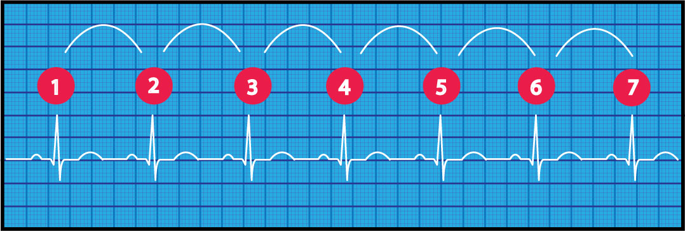
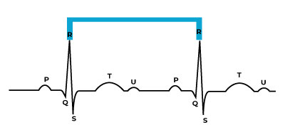

Heart Rate:

There are several methods for calculating heart rate. The first method illustrated above is simple. Count the number of QRS complexes in a six second strip. Multiply by 10 to determine heart rate. This method works well for both regular and irregular rhythms. In the first image, we can count 7 QRS complexes, so the heart rate is 70.

Another method for calculating heart rate is to measure from your R to R wave using calipers then follow this formula:
60 / R-R
For example lets say the measurement from R to R wave is .85. You will plug this number into your formula.
60 / .85 = 70
This means the patient's heart rate is 70. This method works best with regular rhythms. You can use this HR Calculator that does the math for you.